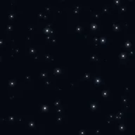

Pole gwiazd

Wypełnia nieprzezroczyste części warstwy głębokim polem gwiazd. Przesunięcie porusza się po polu, a pobliskie gwiazdy przesuwają się dalej niż odległe.
Ustawienia
| Ustawienie | Typ | Zakres | Domyślnie |
|---|---|---|---|
| Przesunięcie | Punkt (X, Y) | Od -100000 px do 100000 px | 0 px, 0 px |
| Skala | Liczba | Od 0.01 do 9 | 0.3 |
| Jasność | Liczba | Od 0.001 do 3 | 0.015 |
| Ciemna materia | Liczba | Od 0.001 do 2 | 0.3 |